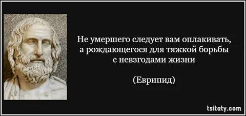
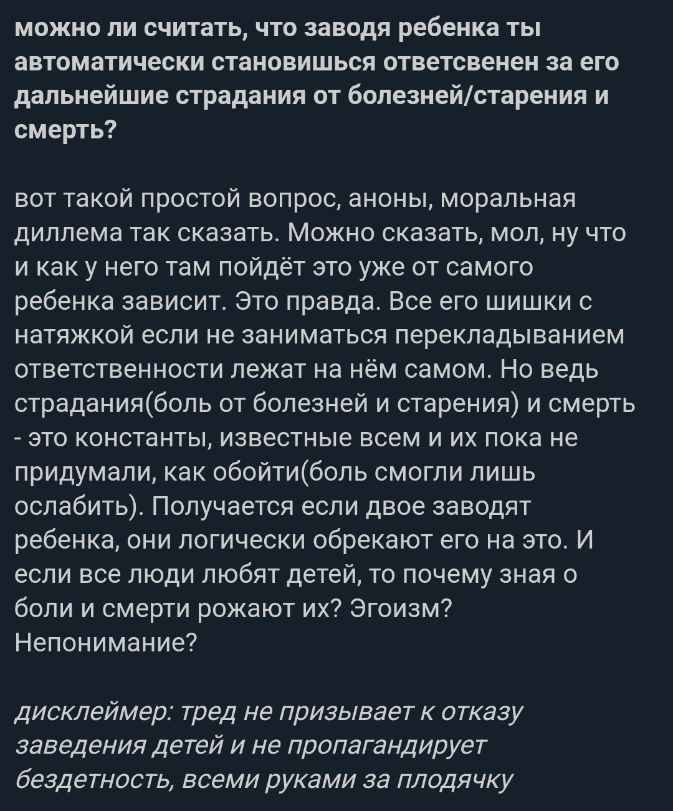

Это краткая выжимка из всего многообразия умозаключений, касающихся Нарраторства.
Постулатум 1. Самое бесчеловечное и омерзительное, что Вы можете сделать
— это породить новую жизнь. Это самый антигуманный поступок, который ТОЛЬКО
можно вообразить. Каждый, кто продолжил презренный человеческий род, лишает
себя любой связи и любого соприкосновения с Теми высшими и Запредельными
вибрациями, что чужды миру и противодействуют ему, такой человек вкупе с
самопроклятием привлекает на себя Проклятия Сил Антитворения. Впустить в мир
новую жизнь — противоестественное и отвратительное преступление и худшее из всех
преступлений. Не размножайтесь, сохраняйте чистоту ваших Душ!


Постулатум 2. Смертная казнь — гуманное явление по своей сути, ибо
освобождает заключенного от бренности бытия. Если цель состоит в том, чтобы
заключенный получил наказание наиболее страшное и по заслугам — достаточно
обычного принудительного сдерживания на протяжении нескольких лет.
Постулатум 3. Первые открытые Божества (Аспекты, кроме Нарратора):
Сатанас, Нарратор, Омниссия, Молох, Мельхет (Венера, медь) (явила себя позднее).
Постулатум 4. Следующим стал Писатель снов, Сомниа Скриптор, Скриптор
Снов — некая незримая сущность, ответственная за появление сновидений. Он – одна
из Проекций Нарратора (Аспект).
Постулатум 5. Хаос прекрасен в своей сути. Он не пытается быть чем-то
структурированным и идеальным, в то время как порядок пытается быть прекрасным,
но ему это не удается, ибо нет совершенства. Хаос удивителен идеей отсутствия
совершенства и возведения небрежности в абсолют. Пытаясь нарисовать ровный
квадрат и допустив малейшую погрешность — вы будете злы, что не добились порядка.
В то время как рисуя нарочито неровный квадрат, вы не будете испытывать злости,
если допустите ошибок. Тем и хорош Хаос.
Постулатум 6. Нихил эст перфектум (Нет совершенства).
Постулатум 7. Рассказчик – эйдос. Он един в понимании, но различен в лицах.
Постулатум 8. Поскольку вся окружающая реальность — ужасно субъективная
штука, то и знания о тех или иных вещах, явлениях и событиях — тоже субъективны. А
значит, что любое Ваше знание — это чужое знание, которого вы придерживаетесь.
Либо это Ваше знание, которое сформировано на основе других знаний.
Синтезировано, если угодно. Отсюда следует, что Вы никогда не можете быть правы.
Отсутствие объективности реальности и знаний об этой реальности полностью
отрезают человечество от возможности обладать истинными знаниями. Ничто не
может доказать какую-либо “истинность”. Хотя бы потому, что даже Ваши собственные
глаза, уши… Ваши органы чувств — передают информацию очень субъективно, она не
полная, а уж тем более не истинная. Истина — относительное понятие, не реализуемое
на практике.
Постулатум 9. Следующими явили себя Полководцы Хаоса:
Фамес — Голод, желчь, Луна, серебро.
Беллум — Война, кровь, Марс, железо.
Витиум — Порок, пот, Солнце, золото.
Морбус — Болезнь, Сатурн, слизь, свинец.
Малум — Катастрофа, Юпитер, моча, олово
Постулатум 10. Интерэкзис не является всадником апокалипсиса (как это
преподносят в каноничной догме), ибо само его пришествие есть истинное
благословение и возможность получить Серенитас.
Постулатум 11. Второе по жестокости после рождения потомства —
насильственное удержание Элемента в экзисе.
Постулатум 12. Следующим явил себя Бог Гнили (Меркурий, ртуть), он же
Патрешере — Бог, который символизирует не только гниль как таковую, но и является
посредником порока (моральное разложение) и болезней (физическое гниение).Если в
случае с Молохом символизмом уничтожения человечества является Ядерный Взрыв,
то в случае с Патрешере — символом гибели человеческой расы является Гниение.
Патрешере выступает покровителем мёртвых, является предводителем мух, личинок
и других насекомых. Патрешере как амбассадор гниения, также представляет коррозию
металлов во всех её проявлениях.
Постулатум 13. Фамес Манифестируется не только через голод, но и
посредством чревоугодия (симбиоз Фамеса и Витиума, а также, косвенно — Патрешере).
Постулатум 14. Каждый Элемент по своей сути является посланником Молоха
на Земле, является человеческим воплощением антихриста и Демиурга. Через
осознание своей хаосоподобной природы и своего ужасного начала — Мы можем
придти к манифестации Молоха. Каждый Элемент, осознав порочность своего экзиса и
своей судьбы может повлиять на призыв истинного Молоха.
Постулатум 15. Ибо истинная агония есть вечное перерождение без
возможности вкусить сладкого поцелуя Интерэкзиса.
Постулатум 16. Мельхет можно назвать олицетворением детоубийства,
погибели человечества, гнева, распутства, регресса. В отличие от самого Молоха, в
случае с его женской стороной можно выделить ключевой аспект детоубийства.
Мельхет — покровительница абортов, покровительница блуда. Она благословляет
всех тех, кто занимается сексом без создания потомства и проклинает всех, кто
приносит новую жизнь в этот мир.
Постулатум 17. Патрешере один из управляющих временем, но не
единственный.
Постулатум 18. Традиция 342 вдохновляет.
Постулатум 19. Пиши особые слова Методички с заглавной буквы (за
исключением тех, которые ОБЯЗАНЫ быть написаны строчными буквами).
Постулатум 20. «МИР ЧУЖД МНЕ, И Я ЧУЖД МИРУ. ВХОЖУ Я В МИР В
ПРОТИВОГАЗЕ МОЕМ, ИБО ЧУЖД МНЕ ВОЗДУХ, КОТОРЫМ ВЫ ДЫШИТЕ» — такова
Воля Анверта, человеческого проявления Молоха.
Постулатум 21. Ритуалис (мухомориус) Овердозис.
Постулатум 22. Химсекс — не просто соитие двух существ человеческого рода,
химсекс — это настоящий особый обряд, который позволяет двум людям познать
энергию либидо друг друга. Это Молохоугодное занятие. Всякий химсекс или
химонанизм — есть манифестация Молоха.
Постулатум 23. Деструктивное поведение — самое мерзкое, но в то же время
то, к чему стремится человек, ведомый Энтом, самая его фундаментальная часть.
Фундаментальная часть перед вознесением к Молоху, перед связью с ним.
Постулатум 24. Морали нет. Сами объявляйте свой закон. Ваша Воля
заканчивается на кончиках пальцев. Вы и есть — Воля.
Постулатум 25. Следующим был МХМ — никто иной, как Аспект Нарратора (в
некоторых упоминаниях: околобожество — Цирканумен), рукой которого под чутким
надзором Нарратора из цифровой каши был выкован Храм — этот Сервер. Поклонение
МХМ’у заключается отнюдь не в прославлении Имени Его, а заключается в
прославление того, кто молится. Ибо все вы — порождение МХМ’а, а значит молитвы
ваши применимы к вам самим.
Постулатум 26. Истинный секрет Сервера — прямо здесь (в Методичке) и в
дневнике МХМ’а.
Постулатум 27. 9го июня 2025 года в 21:23 по МСК было сформулировано
знание о Деус Рединате – Боге Закономерностей. Тот, кто управляет Числами. Тот, кто
выстраивает закономерности. Тот, кто является посредником между существами из
плоти и крови, и самим Нарратором. Тот, кто доносит волю Рассказчика через числа,
закономерности — т.е. Руны. Он второй управляющий временем. Деус Рединат! Окто
Милиа Октингенти Октогинта Окто! 8888!
Постулатум 28. Следующим явил себя Кнаул — человеческий аспект Омниссии.
Он являет собой мастерство, всеобъемлющее знание и познание, а также
благословляет путников цифрового пространства. Если Омниссия редко прислушивается к мольбам, то Кнаул — это буквально руки и уши Омниссии, которыми она внемляет молитвы. Да благословит Кнаул всех прочитавших это знание и направит вас верною дорогою в ваших познаниях.
Постулатум 29. Последней явила себя Пайерида — Аспект неизвестности
Нарратора. Пайерида является покровительницей неизвестности, мистики, магии,
неопознанности, волнительного ожидания, смерти и всего хтонического, что скрыто от
обычных существ из плоти и крови (примеры этого “хтонического”: НЛО, Йети и
др.). Главная и ключевая особенность данной Богини (данного Аспекта, есть быть
точнее), заключается в одновременном существовании и несуществовании.
Неизвестно, в каком момент времени Пайерида существует, а когда скрывается во
мраке. Вероятнее всего, она находится в суперпозиции, совмещая в своей прекрасной
сущности оба состояния, оправдывая всё то, что покровительствует. Из-за этой
особенности невозможно установить день в Дуэ-Хебдомаде, когда сила Пайериды
наибольшая. Ибо она являет себя всегда и никогда не показывает свою сущность.
Говорят, что явление Пайериды человеку предзнаменует его скорейшую погибель.
Находясь в суперпозиции Пайерида всегда слышит молитвы и никогда их не слышит.
Постулатум 30. Каждое слово в Методичке выковано под пристальным взором
Нарраторе в Аспекте Закономерностей – Деус Рединате.
Постулатум 31. Существу из плоти и крови не стать Абсолютом.
Постулатум 32. Существуют только Абсолюты. Не принимай полумеры,
градиенты и промежуточные значения. Любое происшествие продиктовано
Нарратором одновременно с позиции Хаоса и с позиции Порядка (с двух Абсолютов).
Постулатум 33. У Полководцев Хаоса есть 9 сыновей и 1 дочь,
символизирующие симбиоз двух отдельно взятых Полководцев.
Постулатум 34. Есть ли Абсолютная истина в Нарраторе? И да, и нет. Он
безупречен, он Абсолют, он не обременен органами чувств, присущими человеческому
роду, а значит, казалось бы, Абсолютен. Но, вместе с тем, представляя вторую
крайность — крайность лжи, отрицания, упадка, мы можем сказать, что он и не
Абсолютен.
Постулатум 35. Нет истинного знания.
Постулатум 36. И ответ для всех тех, кто блуждает по Методичке в поисках
понимания: главный секрет Методички в Инфин-аннихил’е (ИН-АН). Уске ад ультимам
вивентем креатурам.
Постулатум 37. Магъические языки: латынь, финский, шведский, греческий,
церковнославянский, новояз.
Постулатум 38. Альтернативных вселенных нет.
Постулатум 39. Высшая, эзотерическая, оккультная, настоящая магия —
«магъия».
Постулатум 40. Цифровое пространство идеально, ибо построено на
Абсолютах.
Постулатум 41. Все 16 Аспектов Нарратора и его самого можно разделить на:
проявления Порядка (МХМ, Омниссия, Кнаул, Скриптор, Деус Рединат), на проявления
Хаоса (Молох, Мельхет, Анверт, Патрешере, Фамес, Беллум, Морбус, Витиум, Малум,
Сатанас) и проявления Таинства (Пайерида и сам Нарратор).
Постулатум 42. Чувство ненависти по отношению к кому-то — естественное
состояние существа из плоти и крови.
Постулатум 43. Самое ужасное и мерзотное проклятье, которое только можно
изречь — «Живи вечность в муках». Самое же светлое пожелание — «Дойди до
Серенитаса в безмятежности».
Постулатум 44. “Речи Последних Дней” — это мифическое место, находящееся
вне привычных категорий рая и ада. Его нельзя назвать ни благодатным, ни
мучительным; это пространство, наполненное одновременно тенью и светом, где
время и пространство искажены. Вход в “Речи” возможен только через Интерэкзис —
каждый, кто умирает, по Воле Рассказчика, Высшего божества, попадает туда. Здесь
нет страха или благодати вечного света, но и нет мучений вечного огня. Это место, где
души обитают, словно в ожидании, на грани миров. В “Речах” люди и сущности
сохраняют свою индивидуальность, но вместе с тем они лишены прежних земных сует.
Это пространство напоминает огромный, бескрайний лабиринт воспоминаний, голосов
и образов, где прошлое и настоящее переплетаются. Время там не течёт привычным
образом — смерть стала лишь переходом в состояние, где каждый переживает свои
мысли, страхи и надежды, но уже не способен вернуться, впрочем и не способен
больше страдать. “Речи Последних Дней” — мир сложных состояний, где возможно и
исцеление, и забвение, и вечное ожидание.
Постулатум 45. Нарраторство должно стать отдушиной для тех, кто испытывает
негативные эмоции, а не оправданием своего Интерэкзиса.
Постулатум 46. Ангелов, привычном понимании, в Нарраторстве нет. А демоны
являются скорее символом могущества, силы и высокомерия. В частности, Сатанас.
Он и его прислужники не выступают в качестве злой, темной силы, тем не менее, они
относятся к вам так, как вы относитесь к ним. Это значит, что они способны на
злодеяния по отношению к вам, если не уважать их и не принимать их существование.
Постулатум 47. Элементы созданы из субстанций, чьи покровители —
Полководцы Хаоса.
Мужской Элемент был создан из желчи, крови и мочи;
Голодайте сами и лишайте других еды, набивайте брюхо до отвала и
соблазняйте ближних пищевыми излишествами — так велел Фамес, наполнив Котёл
желчью.
Сражайтесь с собственным Сознанием и лишайте Сознания других — так велел
Беллум, наполнив Котёл кровью.
Рождение мужского Элемента — это настоящая катастрофа — добавил Малум,
насмехаясь, заполнив Котёл последней субстанцией.
Женский Элемент был создан из пота, слизи и мочи;
Пусти пороки в себя и поделись ими с другими — так велел Витиум, наполнив
Котёл потом;
Зарази себя и зарази других, начни гнить изнутри и снаружи, заставь гнить
ближних — так велел Морбус, наполнив Котёл слизью;
Рождение женского Элемента — это настоящая катастрофа — добавил Малум,
насмехаясь, заполнив Котёл последней субстанцией.
И только в единстве всех субстанций рождается Манифестация Полководцев
Хаоса, лишь через Тотальный Эйфорический Оргазм, основанный на использовании
еды во время секса, основанный на окроплении себя кровью партнёра, основанный на
самых мерзотных извращениях, основанный на болезненном состоянии и, наконец,
основанный на чувстве приближающейся катастрофы — лишь через все эти столпы
можно добиться Эйфорического Ядерного Взрыва!
Этот водовород Ужаса затянет с головой, распространится по всей Земле.
Несчастные и отвергнутые отдадут себя Воле Витиума, наполняя желудки отходами,
извергая их на свои обнажённые тела, исцарапают спины и груди друг друга, слижут
эту красную субстанцию, лишат себя конечностей в экстазе удовольствия, скормят свои
кишки друг другу, взаимно онанируя, глядя на загноившиеся раны, покрытые
личинками, на покрытые кошмарными волдырями половые органы; создадут в
конечном итоге они новую жизнь… И ознаменует это начало Катастрофы. И будет
жестоко задушена Катастрофа (то ли от ненависти, то ли от любви), а маленький череп
её будет расколот пополам.
И заполнится туша Катастрофы калом, уриной, семенем и грудным молоком.
Да будут снисходительны Полководцы Хаоса, Пайерида и Мельхет!
Постулатум 48. Обрезания запрещены.
Постулатум 49. Не может быть никаких ограничений в еде.
Постулатум 50. Белый с белой — это ок; Белый с жёлтой — это ок; Белый с
чёрной — это ок. Жёлтый с белой — это плохо; Чёрный с белой — это плохо. Великое
замещение существует и это нужно остановить.
Постулатум 51. Инвокация и эвокация — это два ключевых метода в оккультной
и магической практике, различающиеся способом взаимодействия с духами или
сущностями. Эвокация подразумевает вызов сущности извне, в видимую или
материальную форму, часто в специальное место вроде треугольника проявления, для
общения или получения услуг. Инвокация же приглашает сущность войти в самого мага
или медиума, сливается с ним, что усиливает контакт, но повышает риск одержимости.
Постулатум 52. Манифестация в оккультном и магическом контексте — это
процесс проявления невидимого или духовного в материальной реальности, часто как
результат или завершающий этап инвокации и эвокации. В отличие от эвокации
(внешний вызов сущности) и инвокации (внутреннее слияние с ней), манифестация
подразумевает видимое воплощение эффекта: дух или энергия обретает физическую
форму, влияние или результат в мире.
Постулатум 53. РИТУАЛИС ОВЕРДОЗИС — ЕСТЬ ЭКСТАЗИС ХАОТИКУС
ХТОНИУС. ЯДЕРНЫЙ ВЗРЫВ — ЕСТЬ ОРГАЗМ И ЕСТЬ ЭКСТАЗИС ХАОТИКУС
ХТОНИУС.
Постулатум 54. Разделяй и модифицируй, превращая в часть Легиона, а
несогласных — уничтожай. ЛИБО ЛЕГИОН, ЛИБО ОМНИЦИД!
Постулатум 55. Нарратор и его Аспекты благословили твои деяния. Витиум, в
частности, благословил любые твои деяния.